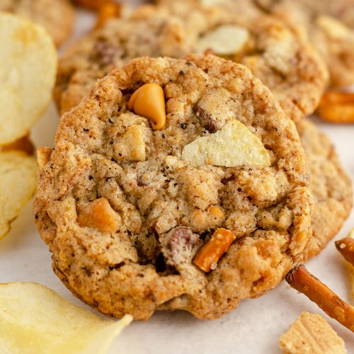

Compost Cookies

Description
This recipe basically throws the entire snack aisle into a single bite through the medium of cookie dough. Sweet and salty, this cookie will please anybody craving a quick snack. These cookies are excellent for breakfast, lunch, dinner, dessert, or anything in between.
Ingredients
(Ingredients and recipe taken from blossom to stem)
Cookies:
- 225 grams AP flour
- 1/2 tsp baking powder
- 1/4 tsp baking soda
- 1 tsp kosher salt
- 225 grams unsalted butter, room temperature
- 200 grams sugar
- 150 grams light brown sugar
- 50 grams glucose or corn syrup
- 1 large egg
- 1 tsp vanilla extract
- 150 grams mini semisweet chocolate chips
- 100 grams butterscotch chips
- 85 grams graham crust (recipe below)
- 40 grams rolled oats
- 5 grams ground coffee
- 50 grams of sturdy potato chips
- 50 grams mini pretzels
Graham Crust:
- 50 grams graham cracker crumb
- 5 grams nonfat dry milk powder
- 6 grams sugar
- 1/4 tsp kosher salt
- 14 grams unsalted butter, melted
- 14 grams heavy cream
Steps
- Make the graham crust. Add the graham cracker crumbs, milk powder, sugar, and salt to a small mixing bowl and whisk to combine.
- In a separate bowl, whisk together the butter and heavy cream. Add the dry ingredients and mix all of the ingredients together with your hands until the bits hold together in small clusters when you squeeze them.
- Make the cookie dough. In a medium mixing bowl, whisk together the flour, baking powder, baking soda, and salt. Set aside.
- In the bowl of a stand mixer fitted with the paddle attachment, add the butter, sugars and glucose or corn syrup and beat on medium-high speed for about 3 minutes. Scrape down the sides of the bowl, add the vanilla extract and egg, and mix on medium-high speed for another 8 minutes. The mixture should look pale and fluffy.
- Turn the mixer to the lowest speed and slowly add the flour mixture. Mix just until combined, no more than a minute. Be careful not to overmix or the cookies will be tough.
- Scrape down the sides and bowl of the mixer. Add the chocolate chips, butterscotch chips, graham crust, oats, and coffee and mix on low speed until just incorporated. Add the potato chips and pretzels and mix again on low speed for about 30 seconds.
- Line a baking sheet with parchment paper, and clear a space for it in the refrigerator. With a 2 3/4-ounce ice cream scoop or a 1/3 cup measure, portion the dough onto the parchment-lined sheet pan. The dough mounds can be right next to each other-you'll spread them out onto different sheet pans before baking. Gently flatten the rounded tops of the dough with your hand. Wrap with plastic wrap and refrigerate for at least an hour or overnight (don't bake them unchilled, they'll spread like mad).
- Preheat oven to 375°F. Line a few sheet pans with parchment paper. Place the chilled dough portions a good 4 inches apart on the parchment-lined sheet pans to allow for spreading.
- Bake until the cookies are browned on the edges but still yellow in the middle, about 18 minutes.
- Allow the cookies to cool completely on the sheet pans before attempting to transfer them to a plate or container.
- They'll keep in an airtight container at room temperature for about 5 days.